美食筆記 · 來自 Obsidian · 2026-10-19 擷取
胡志明進食記錄｜推薦店家精選（合集）
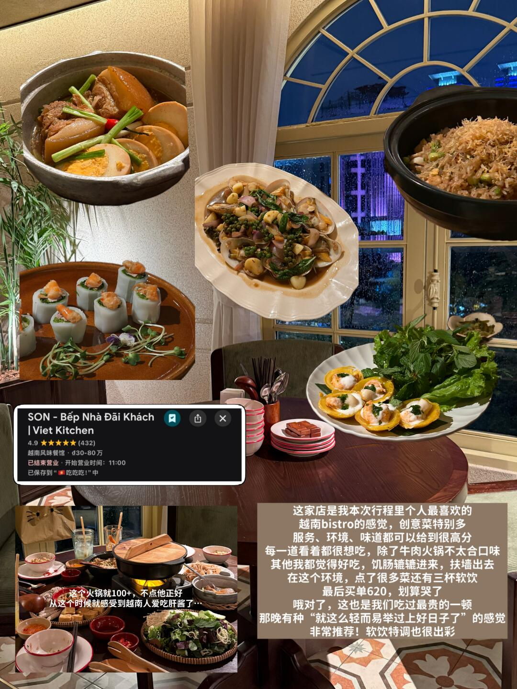
帖主心得：胡志明的覓食記錄——已篩掉只留有參考價值的店家。
🥇 SON - Bếp Nhà Đãi Khách（Viet Kitchen） ⭐4.9（432）
越南 bistro 感覺、創意菜特別多，本次行程個人最喜歡；服務、環境、味道都很高分。點很多菜＋三杯軟飲，買單 620K——「最貴的一頓但划算哭了」。
> ⚠️ 唯一不愛：牛肉火鍋（100+）
🥈 Quán Nem ⭐4.2（6184）｜河內
本次 Top2 必吃榜，人聲鼎沸全是當地人。烤肉米線是特色——米線夾一坨在魚露裡散開，配烤肉吃超香（魚露選北方式甜口，加薄荷葉畫龍點睛）；炸春捲現點現剪，塞滿蟹肉和粉絲，外皮金黃酥脆。
Phở Hòa Pasteur ⭐4.2（6152）
最後一天吃到好吃的 pho！湯頭真正濃郁鮮甜，心中的標準火車頭（粉紅教堂附近）。甘蔗檸檬水超清爽才 2 塊錢。春捲皮偏厚偏哏。
Bánh Mì 362 ⭐4.4（1012）
新式連鎖法棍，搭配選擇多。11 號黑椒牛肉（微辣） 牛肉 juicy、肝醬少更清爽。
🍕 Pizza 4P's（外送）
雨天叫外送，成為網紅店「舉雙手贊成」：用料實在、味道正宗，三重芝士披薩第一口普通但越吃越香（餅皮又香又韌，很標準的意式）。歡樂套餐 545,400 含三種自製芝士披薩、蟹肉奶油醬／番茄醬義大利麵、蛤蜊燉湯。蟹肉蟹黃意麵奶油香濃郁；奶油燉湯冷掉就普通。
Cà phê Linh ⭐4.5（1815）
藍色門頭網紅店，拍照為主（大家有序排隊拍）。招牌鹽咖啡、青檸咖啡——但「致死量的煉乳和奶油」，記得說 less sugar。
HŌM No.2 ⭐4.9（29）｜第二郡
咖啡「現代且正常」（不像越南傳統瘋狂加煉乳）。草莓甜甜圈用鹹奶油、口感輕盈。
> 💡 貼士：第二郡是外籍生活區，好逛好吃，值得留半天到一天
Cashew house ⭐4.3（200）｜第二郡
韓系氛圍烘焙店，有種閃回首爾的感覺，麵點好吃。
The Running Bean - Mạc Thị Bưởi
Grab 外送。鹹杏芒果康普茶果香四溢、酸爽衝擊味蕾（解甜膩神器）；柑橘特調正常好喝，brunch 也不錯。
Bánh Mì Bà Huỳnh（Madam Win）｜外帶
法棍個頭大、塞得滿，包裝超好（蔬菜與法棍分開密封，紙盒厚實可冷凍回帶）。復烤後依然好吃。
> ⚠️ 老式法棍肝醬多，吃多會發腥「像吃貓罐頭」
GO! MIỀN ĐÔNG 超市 ⭐4.2（211）
大型超市（類似永輝），晚上可逛。必買：pho 風味薯片（有清湯牛腩味）、獵奇芒果硬糖（內包辣椒粉）、酸奶（乳酪質地加足量果肉）。
> 💡 Go 超市的芒果有奶香味、超甜
📸 實拍（共 12 張）
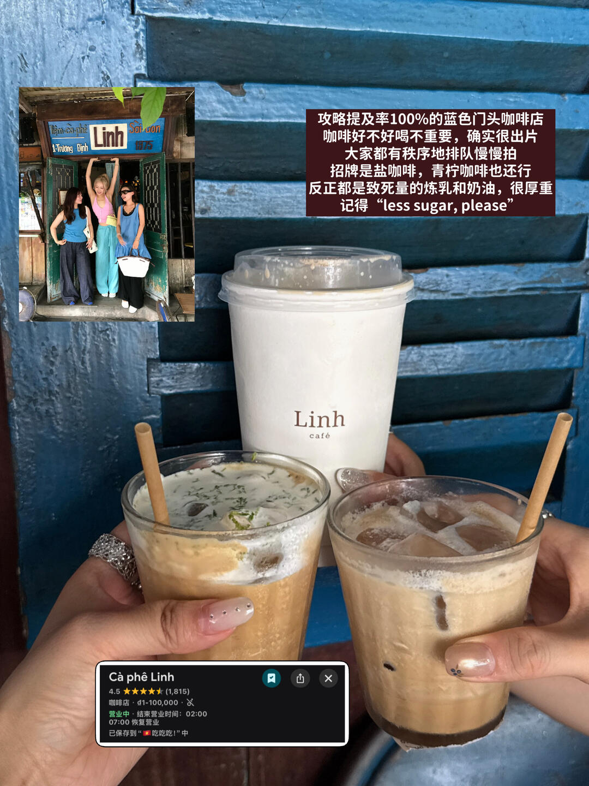
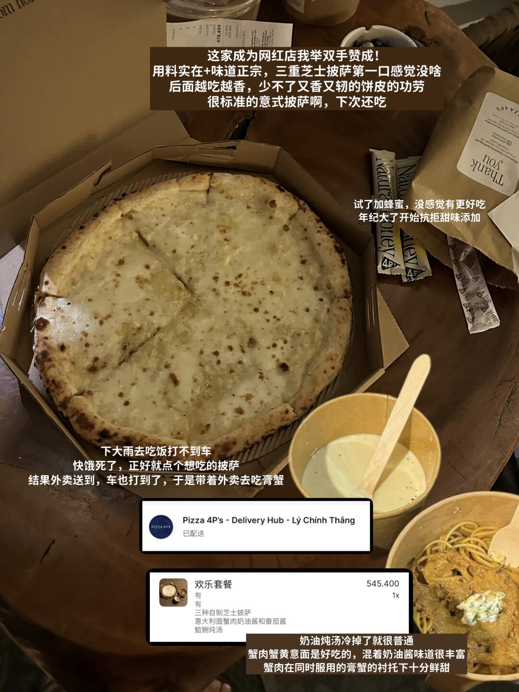
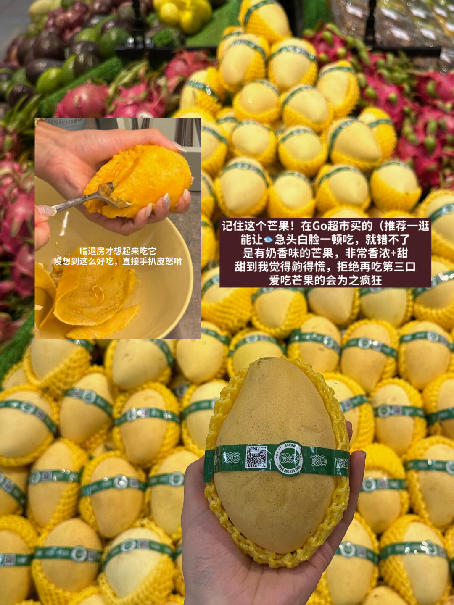
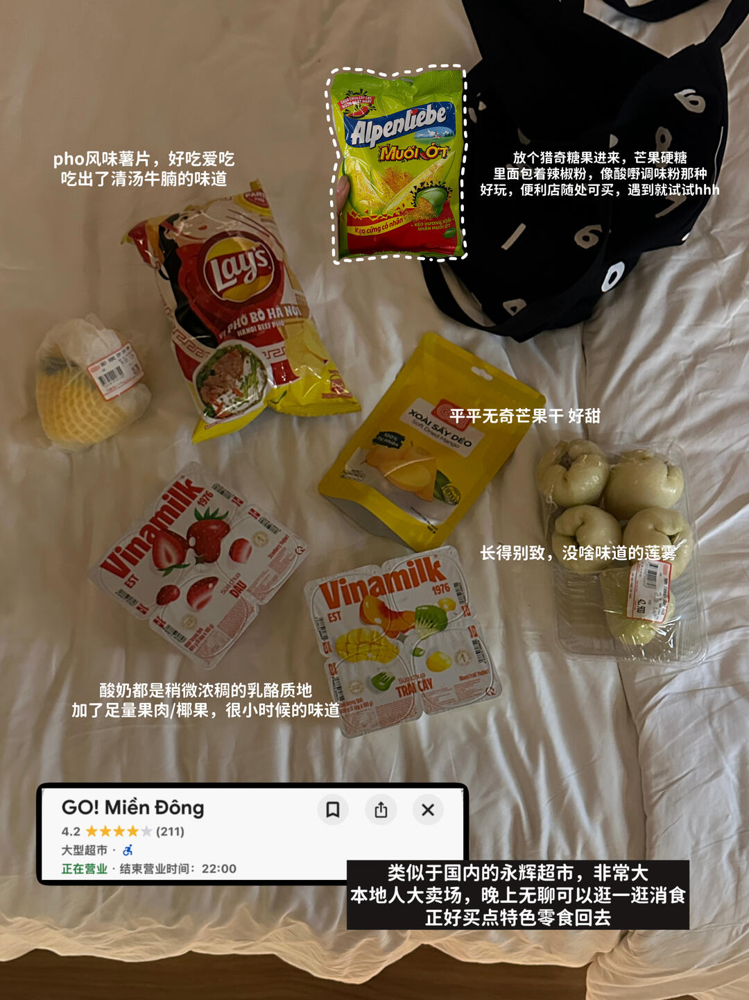
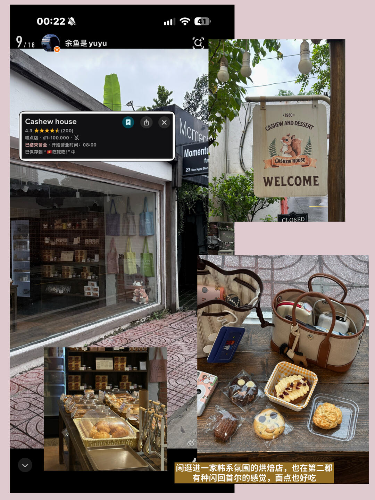
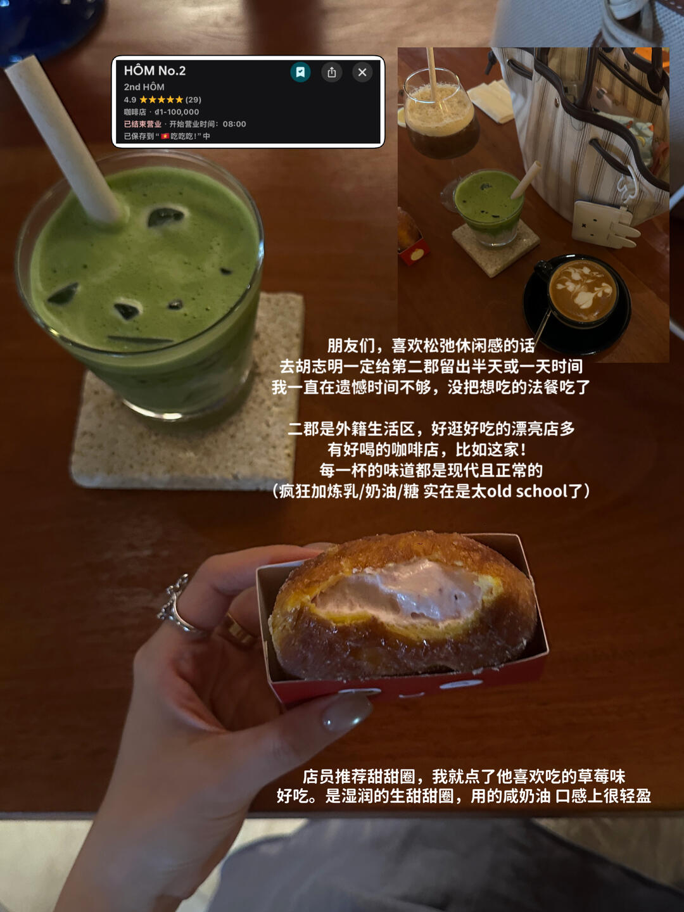
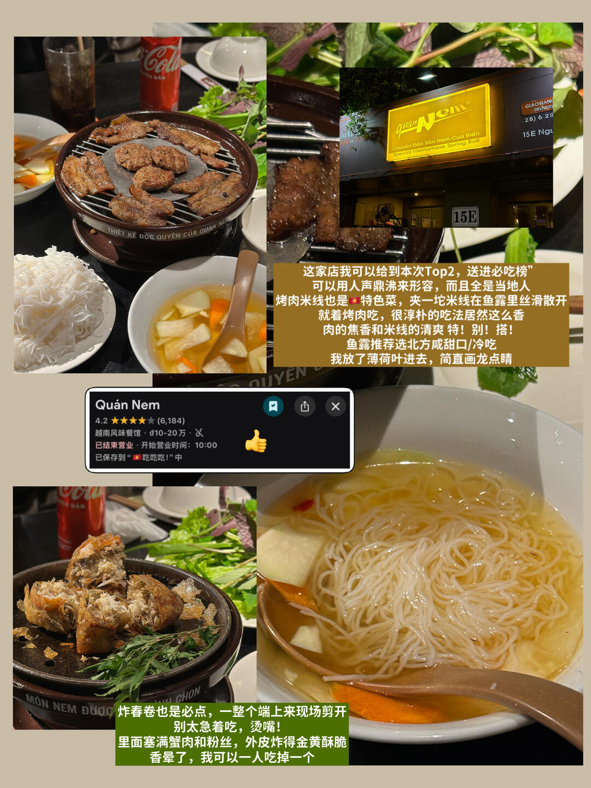
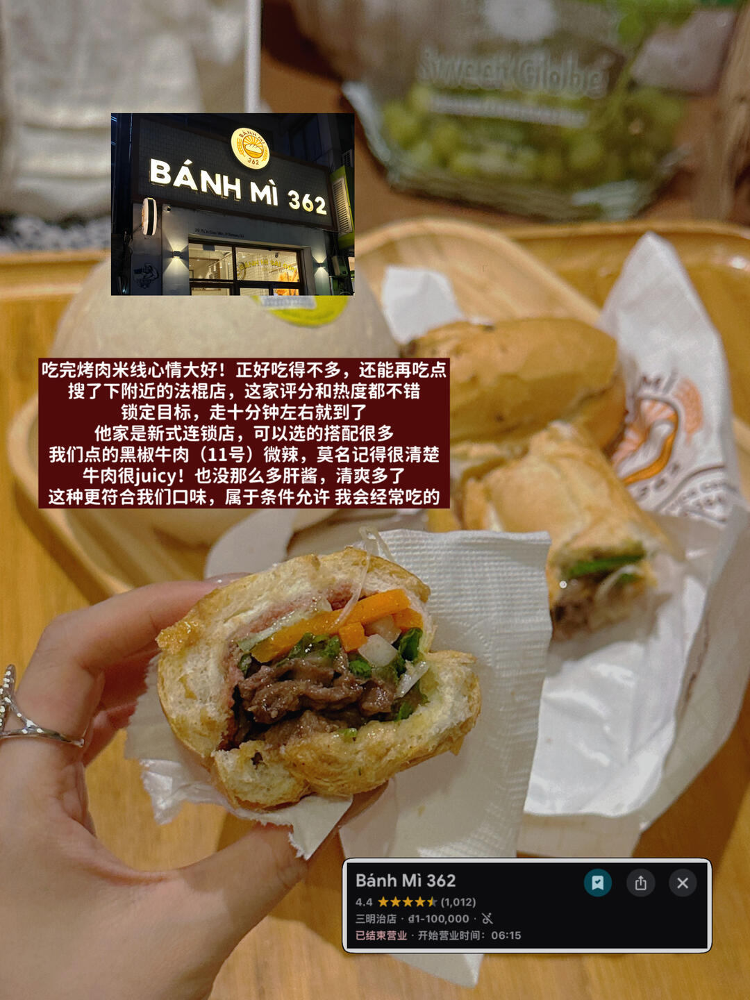
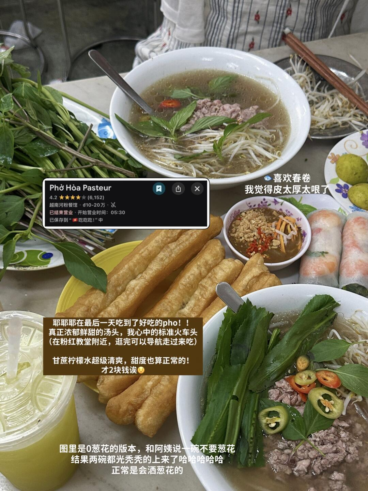
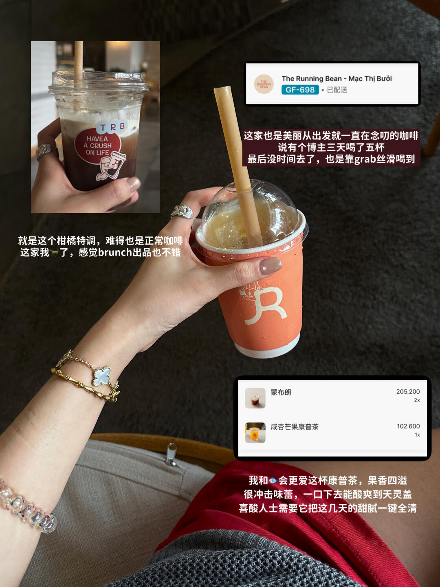
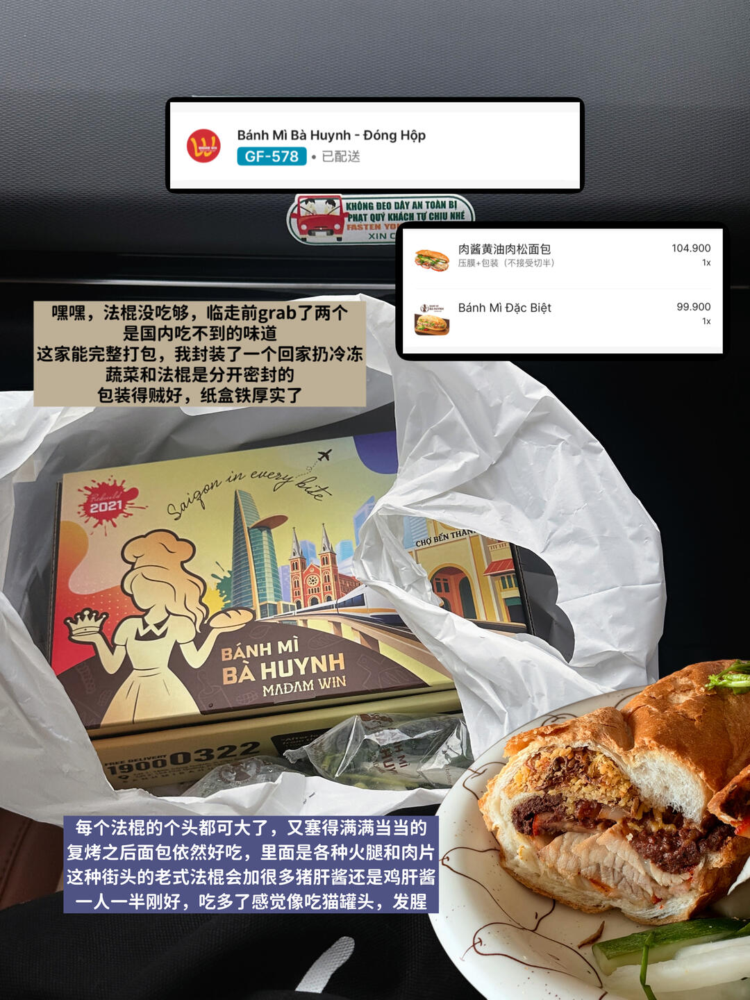